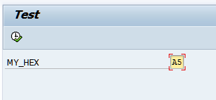
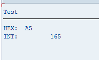

Convert HEX to DEC in ABAP
Posted on October 16, 2014
If you declare a variable type X (Hexadecimal) and assign a value to it, you can move that value to another variable with type I (Integer), and the value will be converted to Integer automatically.
REPORT znumbers.
data:
my_int type i.
parameters:
my_hex type x.
my_int = my_hex.
write:/ 'HEX: ', my_hex, /'INT: ', my_int.

Hex2Dec
Result:

Hex2Dec